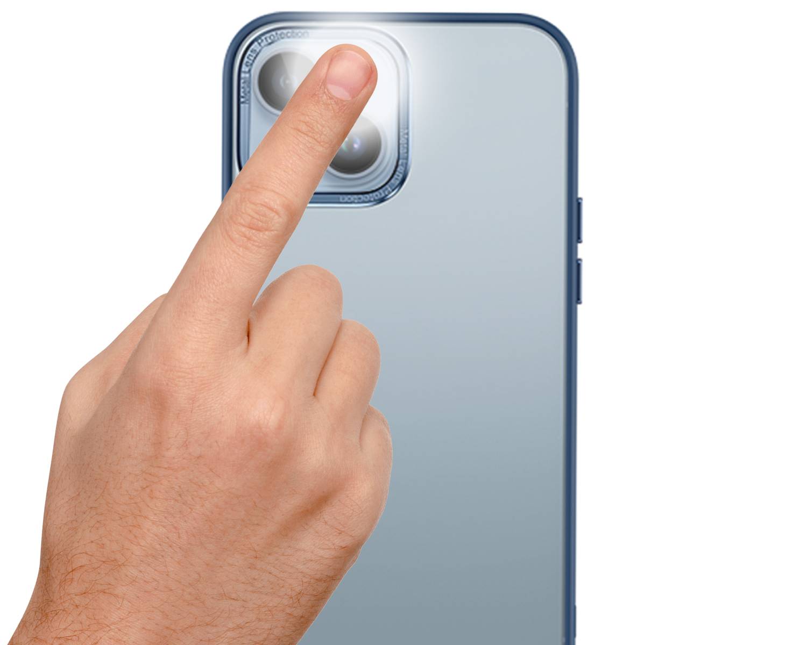

<ion-header class="new-journal" no-border no-shadow mode="md">
  <ion-toolbar mode="md">
    <ion-buttons slot="start">
      <ion-button (click)="close()" >
        <ion-icon name="chevron-back" style="font-size: 2em!important;" color="primary" ></ion-icon>
      </ion-button>
    </ion-buttons>
    <ion-title class="ion-text-center">Heart Rate</ion-title>
    <ion-buttons slot="end">
      <ion-button (click)="confirm()" [disabled]="!lastRecord || mode === 'start'">
        <ion-icon name="checkmark-outline" style="font-size: 2em!important;" color="primary" ></ion-icon>
      </ion-button>
    </ion-buttons>
  </ion-toolbar>
</ion-header>
<ion-content>
  <div class="heart-rate-container">
    <div class="start-mode" *ngIf="mode === 'start'">
      <div class="heart-container">
        <div class="banner">
          <h3>Tap the heart to start</h3>
        </div>
        <button class="heart-button" (click)="showHeartRateMeasure()">
          
        </button>
      </div>
      <div class="help-container">
        <div class="instruction">
          <h3>Place your finger over both the back camera and flashlight</h3>
        </div>
        
      </div>  
    </div>
    <div class="result-mode" *ngIf="!isSubmitting && mode === 'result' && lastRecord">
      <div class="date">
        <h4><app-date-formatter [date]="lastRecord.timestamp" format="MMM dd, yyyy hh:mm a"></app-date-formatter></h4>
      </div>
      <div class="value">
        <h1>{{lastRecord.value}}</h1>
        <h4>BPM</h4>
      </div>
      <ion-fab class="refresh">
        <ion-fab-button size="small" (click)="mode = 'start'">
          <ion-icon name="refresh-outline"></ion-icon>
        </ion-fab-button>
      </ion-fab>
    </div>
  </div>
  <ion-modal #progressModal class="progress-modal" (willDismiss)="progressWillDismiss($event)">
    <ng-template>
      <ion-header mode="md">
        <ion-toolbar mode="md">
          <ion-buttons slot="start" (click)="progressModal.dismiss()">
            <ion-button >
              <ion-icon name="chevron-back" style="font-size: 2em!important;" color="primary" ></ion-icon>
            </ion-button>
          </ion-buttons>
          <ion-title class="ion-text-center"></ion-title>
          <div slot="end" style="width: 48px"></div>
        </ion-toolbar>
      </ion-header>
      
      <ion-content>
        <div class="progress-ion-content">
          <ion-card mode="ios">
            <ion-card-content>
              <div class="progress-container">
                <h3 class="desc">Measuring your heart rate. Hold still...</h3>
                <div class="progress-cicle">
                  <mat-progress-spinner [diameter]="60" [mode]="capturePercentage === 0 ? 'indeterminate' : 'determinate'" color="primary" [value]="capturePercentage"></mat-progress-spinner>
                  <h3 class="value">{{capturePercentage}}%</h3>
                </div>
              </div>
            </ion-card-content>
          </ion-card>
          
          <iframe #iframe src="../../../assets/heart-rate-monitor/src/index.html" (load)="startMeasure()"></iframe>
        </div>
      </ion-content>
    </ng-template>
  </ion-modal>
  

</ion-content>